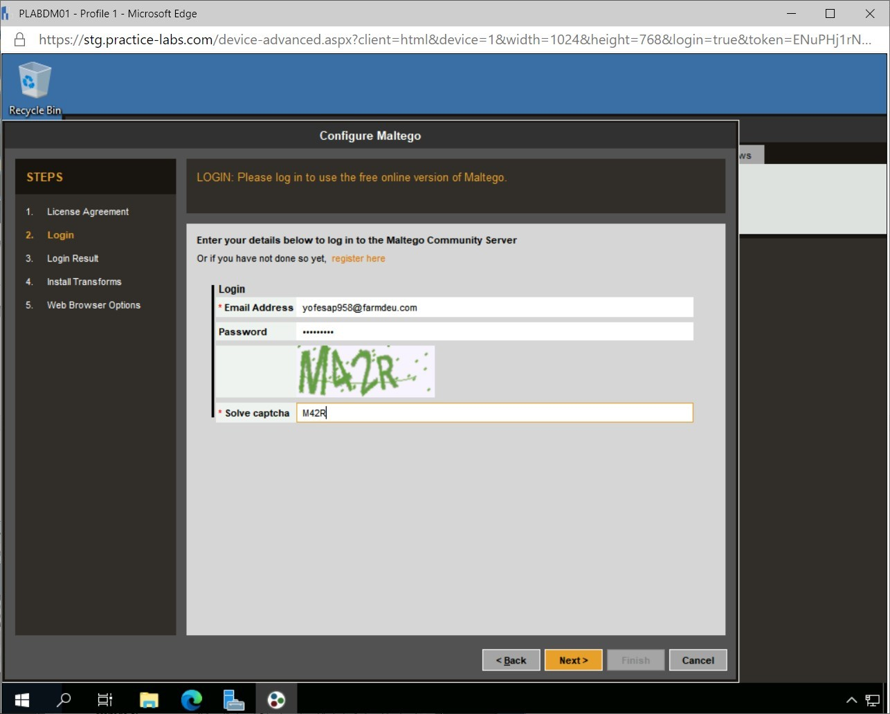
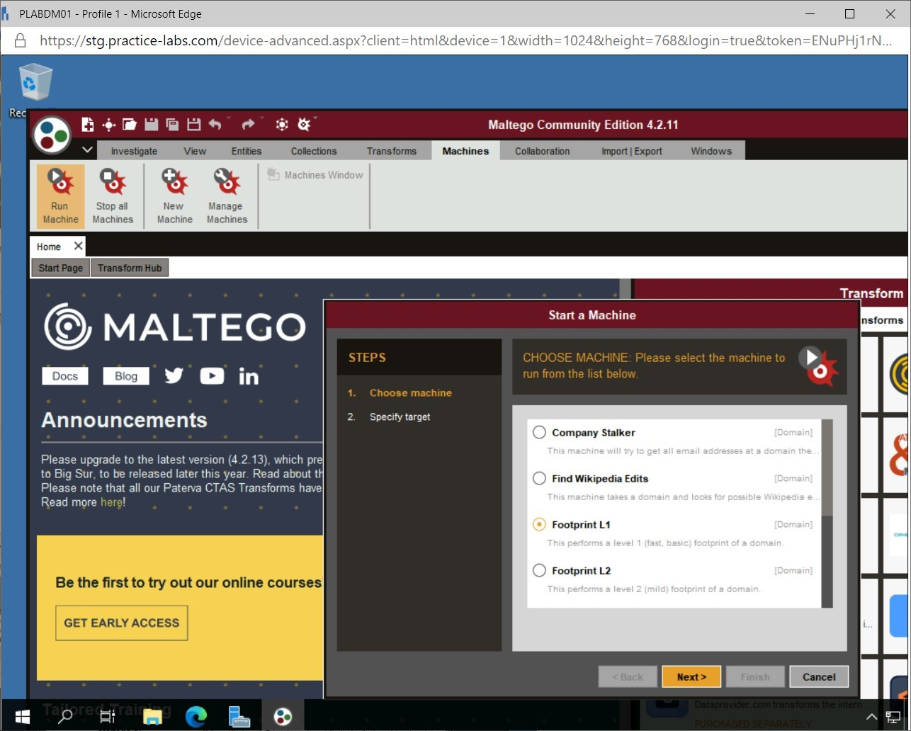
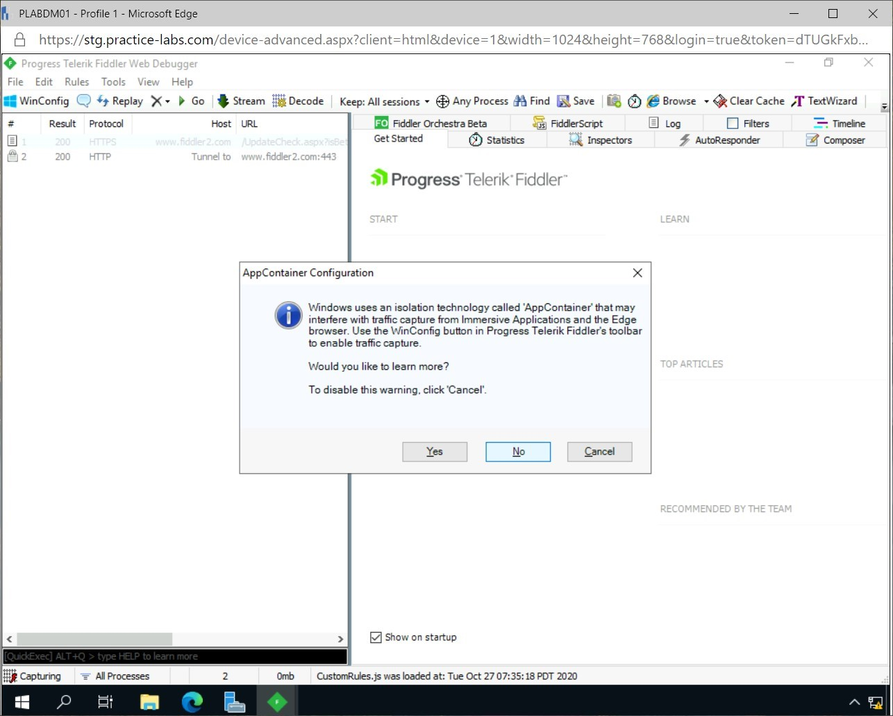

Introduction
bb1840e4-5425-49a3-9d75-477b8f016ff8
Welcome to the Penetration Testing module. In this module, you learn about penetration testing and the types of penetration testing.
dc640c20-9434-45ea-b7c2-6d4d6a196bfc
Learning Outcomes
In this module, you will complete the following exercises:
- Exercise 1 - Explain Penetration Testing and its Types
After completing this module, you should be able to:
- Conduct an Active Reconnaissance Assessment
- Conduct a Passive Reconnaissance Assessment
After completing this module, you should have further knowledge of:
- Penetration Testing
- The Rules of Engagement for Conducting a Penetration Testing Activity
- Different Penetration Testing Techniques
- Reconnaissance and Penetration Testing Exercises
Exam Objectives
The following exam objectives are covered in this module:
1.8 Explain the techniques used in penetration testing.
- Penetration Testing
- Passive and Active Reconnaissance
- Exercise Type
Note: Our main
focus is to cover the practical, hands-on aspects of the exam
objectives. We recommend referring to course material or a search engine
to research theoretical topics in more detail.
Do not try these exercises on
random applications or applications available on the internet. These
exercises are performed in a sample application that is publicly
available for learning purposes.
Lab Duration
It will take approximately 45 minutes to complete this lab.
c6fa62a3-1a00-4052-8104-258e8cbaa187
Help and Support
For more information on using Practice Labs, please see our Help and Support page. You can also raise a technical support ticket from this page.
Click Next to view the Lab topology used in this module.
d2c53300-f951-45a9-9aa4-3d4ecae69e11
Lab Topology
During your session, you will have access to the following lab configuration.

Depending on the exercises, you may or may not use all
of the devices, but they are shown here in the layout to get an overall
understanding of the topology of the lab.
- PLABDC01 - (Windows Server 2019 - Domain Controller)
- PLABDM01 - (Windows Server 2019 - Domain Member)
- PLABWIN10 - (Windows 10 - Domain Member Workstation)
- PLABKALI - (Kali Linux 2019.4 - Standalone Server)
Click Next to proceed to the first exercise.
<
Home |
README >
CompTIA Security+ Practice Labs
Exercise 1 - Explain Penetration Testing and its Types
A penetration test is often called a pen-test and is
conducted to uncover, exploit and understand the severity of security
loopholes in applications, network devices and infrastructure components
like web servers, application servers, database servers etc.
Learning Outcomes
After completing this module, you should have further knowledge of:
- Penetration Testing
- The Rules of Engagement for Conducting a Penetration Testing Activity
- Different Penetration Testing Techniques
- Reconnaissance and Penetration Testing Exercises
After completing this module, you should be able to:
- Conduct an Active Reconnaissance Assessment
- Conduct a Passive Reconnaissance Assessment
Your Devices
You will be using the following devices in this lab. Please power these on now.
- PLABDM01 - (Windows Server 2019 - Domain Member)
- PLABKALI - (Kali Linux 2019.4 - Standalone Server)
Task 1 - Penetration Testing
There are different types of penetration testing that
can be conducted to uncover vulnerabilities. Each of these is conducted
based on the assessment scope and the degree at which the loopholes
require identification and exploitation.
In this task, you will learn penetration testing and its types.
Penetration Testing
If an application is developed in an insecure manner,
the network and infrastructure components are not hardened or secured,
meaning it will cause weaknesses, which can also be called loopholes or
vulnerabilities. The vulnerability assessment is a technique that
uncovers these loopholes in a system. Penetration testing goes beyond
vulnerability assessments resulting in an exploit of the identified
vulnerabilities. The outcome of such an exploit could be a complete
system takeover or exposure of sensitive information.
Penetration testing requires focused attention from
trained security professionals. Its goal is to measure an organization’s
level of resistance to an attack and uncover any weaknesses within the
environment. A report is given to management with the details of the
identified vulnerabilities along with the severity and recommendations
to fix the vulnerabilities.
Penetration Testing follows the following process:
Figure
1.1: Displayed is the Penetration testing process steps; Discovery,
Enumeration, Vulnerability Mapping, Exploitation and Reporting.
Each phase of the penetration testing activity is
accomplished using a variety of tools. Below are some of the tools used
in the penetration testing phases:
Port Scanners
Service and OS Fingerprinting tools
- Xprobe2
- Queso
- Nmap
- p0f
- Httprint
- Amap
- Winfingerprint
Vulnerability Scanners
- Nessus
- BurpSuite
- Acunetix
- SQLMap
- Vega Vulnerability Scanner
Types of penetration testing
There are different types of penetration testing
activities, each of which is unique in its way of how it will be
conducted. The three common types are:
- Blackbox Testing
- Whitebox Testing
- Graybox Testing
Blackbox Testing
Blackbox testing is conducted without prior knowledge
about the information system, infrastructure component or the
application against which the testing is carried out. Credentials to
authenticate into the systems are not shared and need to be uncovered as
part of the assessment. This type of testing closely simulates a
real-world attack by an external party. Blackbox testing is also called a
zero-knowledge test.
A common disadvantage of this type of testing is that
it will probably not detect all vulnerabilities. Another disadvantage
is that the testing team may inadvertently impact another system.
Whitebox Testing
Whitebox testing is conducted with full knowledge of
the information system, infrastructure component or application under
test. For example, in the case of application white-box penetration
testing, the complete details of the application including the URL,
credentials for authentication, data flow and other test information, is
provided in advance for conducting the test. In extreme cases, the
complete source code of the application or the complete network topology
is shared with the tester to identify exploits.
A Whitebox testing allows the tester or the test team
to target specific internal controls and features. It may yield better
results but does not simulate a real-world attack.
Graybox Testing
Graybox testing is conducted with limited or partial
information on the information system, infrastructure component or
application under test. The initial activities in this kind of testing
are to gather more information on the systems for further exploits. This
type of testing yields better results than blackbox testing.
Task 2 - Rules of Engagement
Rules of engagement is a documented agreement that is arrived at during the planning phase of a penetration testing activity.
In this task, you will learn the rules of engagement for conducting a penetration testing activity.
Rules of Engagement
The Rules of Engagement agreement is made between the
person or an organization that conducts the test and the organization
under test. Rules of engagement are also referred to as the “rules of
behavior” for the penetration testing activity. At a minimum, a rules of
engagement document details the below:
- Scope of the assessment
- Contact information
- Handling sensitive information during the test
- Steps to be followed before, during and after the test
- Specific compromise targets
- Duration of the test
An example of some of the things addressed in a rules of engagement document for a network penetration test are as follows:
- What is the objective of the penetration test?
- Is the test carried out against a compliance requirement?
- When are the different phases of penetration testing
(discovery, scanning, enumeration, exploitation and reporting)
conducted (During business hours / After hours / On weekends)?
- What is the Number of IP addresses under test (internal / external IP addresses)?
- Have you attempted to gain the highest privilege on a compromised machine?
- Have you performed a local vulnerability assessment on the compromised machine?
- Have you performed a denial of service and brute force types of attacks?
Task 3 - Penetration Testing Techniques
There are different types of penetration testing
techniques that allow for the uncovering of vulnerabilities associated
with authentication, authorization and elevation of privilege.
In this task, you will learn the different penetration testing techniques in detail.
Lateral Movement
Lateral movement in a penetration testing activity is
the gradual process of gaining access to a network component,
infrastructure or an application layer in-order to minimize detection.
Privilege Escalation
Privilege escalation allows access that a normal user
would not otherwise have. There are two types of privilege escalation -
horizontal and vertical. Horizontal privilege escalation allows
unauthorized access to system resources or application files of another
user at the same level or role within an organization. Vertical
privilege escalation allows unauthorized access to system resources or
application files of another user at a higher level or role within an
organization.
Persistence
Persistence refers to the maintenance of access for a prolonged period of time without being identified.
Clean up
Clean up is conducted after a penetration testing
activity to remove any clutter or remanence from the penetration testing
activity. Cleaning up is very important as the strategy and approaches
may be used for real attacks if not cleaned.
Pivoting
Pivoting refers to attacking or taking control of a
system through another compromised system. The compromised system is
often a trusted system that belongs to the same network.
Bug Bounty
A bug bounty is a reward given to individuals by
organizations for uncovering critical vulnerabilities or exploits in the
organization’s applications or infrastructure components.
Bug Bounty programs allow organizations to identify
and remediate vulnerabilities before the public becomes aware of them,
thus reducing intense and/or widespread attacks.
Task 4 - Reconnaissance and Penetration Testing Exercises
Reconnaissance also called information gathering,
aims at collecting interesting information as much as possible about the
target system, infrastructure components and applications in order to
advance the attacks. Information collected in the reconnaissance phase
is used in enumeration, where the data is used for identifying potential
attack vectors.
In this task, you will learn active and passive reconnaissance.
Active Reconnaissance
In an active reconnaissance also called active
information gathering, the penetration tester collects information using
various tools. The targeted organization is aware of the tester’s
movement or intrusion within their systems and applications. The
penetration tester interacts with the target system through automated
scanning or manual testing tools like ping, traceroute etc. Some of the
activities carried out during an active reconnaissance are:
- Mapping network infrastructure
- Scanning open services for vulnerabilities
- Searching for directories, files and servers
- OS Fingerprinting
- Banner Grabbing
- Web application scanning
Passive Reconnaissance
In a passive reconnaissance or passive information
gathering, the tester does not engage or interact with the system. The
penetration tester cannot send traffic to the targeted system and
chooses to stay hidden and not detected by the target system. Some of
the activities carried out during a passive reconnaissance are as
follows:
- Identifying IP addresses
- Identifying subdomains
- Identifying external sites
Drones/unmanned aerial vehicle (UAV), War-driving and War-flying
An unmanned aerial vehicle otherwise called a drone is an aircraft that operates on its own without human operation.
War-driving searches for wireless networks from a
moving vehicle using a computer device or smartphone. War-drivers make
use of Wifi-equipped devices together with a location tracker to
collect the location of wireless networks. War-driving techniques are
now taken to the air and are sometimes referred to as war-flying.
Foot-printing and OSINT
OSINT stands for Open Source Intelligence and is used
for gathering publicly available information. OSINT is passive in
nature. Foot-printing is active in nature and refers to collecting
information by interacting with the target machine, application,
infrastructure, network or server component.
Blue, Red, White and Purple Teams
Blue Team
The blue team is often comprised of an internal
security team. These are trained security professionals that look for
unusual errors, suspicious and unexpected behavior in the infrastructure
system components and applications.
Red Team
The red team simulates real-time attacks. The red
team normally uses available techniques to perform a breach compromising
existing defenses and obtain sensitive information. The attack could
also extend to the organization’s infrastructure in an attempt to bypass
physical security controls. Identity theft, social engineering,
phishing and similar attacks are also attempted.
A red team could consist of internal security
professionals. However, the best way to go about it is to have external
entities perform a simulated attack from outside. Specialized red teams
include ethical hackers, penetration testers and social engineering
experts.
White Team
The white team oversees the testing activities and
often creates cyberattack scenarios. The scenarios created by the white
team could be used by other teams when conducting the penetration
testing activity.
Purple Team
The purple team often combines the roles of red and
blue teams. A purple team is most often setup for cost optimization as
the red and blue team setups could be time-consuming and costly.
Task 5 - Active Reconnaissance Assessment
Active reconnaissance gathers information about the
target system by interacting with the target. This provides information
about the target system that could help the penetration tester with
advanced exploits.
In this task, you will learn to conduct active reconnaissance using the tools.
Step 1
Connect to the PLABDM01 device.
Figure 1.2 Screenshot of PLABDM01: Displaying the desktop.
Step 2
Click Start and type the following:
Maltego
Figure 1.3 Screenshot of PLABDM01: Displaying opening the Maltego application.
Step 3
Select Run in the Maltego CE (Free) pane.
Figure 1.4 Screenshot of PLABDM01: Displaying opening the Maltego application.
Step 4
In the License Agreement window select the Accept tick box and click Next.
Figure 1.5 Screenshot of PLABDM01: Displaying opening the Maltego application.
Step 5
Login using the following credentials
Username - yofesap958@farmdeu.com
Password - test1234!
Complete the Solve captcha field and click Next.
Figure 1.6 Screenshot of PLABDM01: Displaying signing into the Maltego application.
Step 6
On the LOGIN RESULT page select Next.
Figure 1.7 Screenshot of PLABDM01: Displaying logging into the Maltego application.
Note: The login process may take a while to complete.
Step 7
On the INSTALL TRANSFORMS window select Next.
Figure 1.8 Screenshot of PLABDM01: Displaying logging into the Maltego application.
Step 8
In the WEB BROWSER OPTIONS leave the default selection and select Finish.
 Figure 1.9 Screenshot of PLABDM01: Displaying logging into the Maltego application.
Figure 1.9 Screenshot of PLABDM01: Displaying logging into the Maltego application.
Step 9
Click the Machines tab and select Run Machine.
Figure 1.10 Screenshot of PLABDM01: Displaying the Maltego application and selecting the Machines tab.
Step 10
Select Footprint L1 and click Next.
Figure 1.11 Screenshot of PLABDM01: Displaying the Maltego application and selecting the Footprint L1.
Step 11
In the Domain Name field type the following:
testphp.vulnweb.com
Click Finish.
Figure 1.12 Screenshot of PLABDM01: Displaying the Maltego application with the Domain Name field populated.
Step 12
Select OK on the Results Limited pop-up window.
Figure 1.13 Screenshot of PLABDM01: Displaying the Maltego application conducting a scan on a vulnerable website.
Note: The initial scan may take a while to display results.
Step 13
Close the Maltego application.
Figure 1.14 Screenshot of PLABDM01: Displaying the Maltego Footprinting Output.
Note: The
Maltego application was used to conduct an active reconnaissance
assessment on a web application. The results displays the DNS
information, which can be used for a vulnerability assessment.
Step 14
In the Save pop-up window select Discard all
Figure 1.15 Screenshot of PLABDM01: Displaying closing the Maltego application.
Task 6 - Passive Reconnaissance Assessment
Passive reconnaissance gathers information about the
target system without interaction with the target. One way to conduct
passive reconnaissance for web applications is to examine the http
headers to identify protections applied.
Common web application protection headers are:
- XFrame - prevent framing and clickjacking issues
- X-XSS-Protection - prevents execution of cross-site scripting scripts
- Cache-control - prevents caching of sensitive information in the browser
In this task, you will learn to conduct passive reconnaissance using Fiddler, which is a HTTP/ HTTPs traffic interception tool.
Step 1
Connect to the PLABDM01 device.
Launch Microsoft Edge from the taskbar and navigate to:
http://testphp.vulnweb.com
Figure 1.16 Screenshot of PLABDM01: Displaying opening the Microsoft Edge browser and browsing to the web page.
Step 2
Click Start and launch the Fiddler 4 application.
Figure 1.17 Screenshot of PLABDM01: Displaying opening the Fiddler 4 application.
Step 3
In the AppContainer Configuration pop-up window select No.
Figure 1.18 Screenshot of PLABDM01: Displaying conducting passive reconnaissance on a web page using the Fiddler application
Step 4
Open Microsoft Edge and refresh the web page.
Figure 1.19 Screenshot of PLABDM01: Displaying the Microsoft Edge browser.
Step 5
Open the active session of the Fiddler application.
Figure 1.20 Screenshot of PLABDM01: Displaying the Fiddler application passively capturing information.
Step 6
Select the Inspectors section in the Fiddler application.
Figure 1.21 Screenshot of PLABDM01: Displaying the Fiddler application conducting passive reconnaissance.
Step 7
In the left pane of the Fiddler application select testphp.vulnweb.com.
Figure 1.22 Screenshot of PLABDM01: Displaying the Fiddler application conducting passive reconnaissance on a web page.
Note: From the
captured results, the web page headers are displayed this can be used by
a penetration tester to gather information of the web page and identify
vulnerabilities.
89702e5d-d25a-44d4-b0df-b081bb2e2dbd
d31298f5-3011-4089-bf06-fbf08c44a7f9
Keep all devices that you have powered on in their current state and proceed to the review section.
Review
Well done, you have completed the Penetration Testing Practice Lab.
c6e74811-6d1f-4779-94c2-34fcca239022
d3334713-fba0-4d2d-a62f-05142b933060
101d7f0c-934d-4832-bcc8-52724f9f1202
b52a7b5d-6db1-42e0-aeba-64af1d34c990
8b5cde45-b46b-4fe6-b3ed-a29259f8e0a1
5bc67be2-2e22-48da-a49f-b4d36f667437
a220fc4b-c768-48c1-ad7d-08068009e451
f8884843-9743-4267-b0be-dae96268db88
aaaaaaaa-1111-1111-1111-193f35a24fe3
Summary
You have completed the following Exercises:
- Exercise 1 - Explain Penetration Testing and Types
You should now have further knowledge of:
- Penetration Testing
- The Rules of Engagement for Conducting a Penetration Testing Activity
- Different Penetration Testing Techniques
- Reconnaissance and Penetration Testing Exercises
You should now be able to:
- Conduct an Active Reconnaissance Assessment
- Conduct a Passive Reconnaissance Assessment
Feedback
067744a4-4299-4662-b5be-04dbb636a007
Shutdown all virtual machines used in this lab. Alternatively, you can log out of the lab platform.